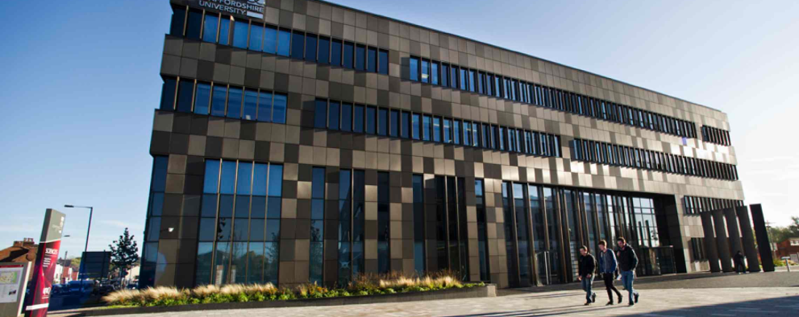

Whether you're interested in web design and software engineering,
or computer networks and cyber security,
and whatever level you might be at - we're bound to have
an undergraduate or postgraduate computing course for you.
Studying one of our computing courses means you'll have access to that latest software, expert facilities, and knowledgeable lecturers. We also have strong industry links with the likes of Sony, Cisco, Microsoft, Amazon, Airbus and Juniper, ensuring that our courses stay relevant, and you're in demand when you graduate.
Plus, our ties with Cisco and Juniper mean you can complete industry qualifications while you're here, giving you an extra edge in your future career.
All of our undergraduate and postgraduate courses give you the chance to undertake a paid, 12-month industry placement. This will develop your personal and professional knowledge, and our dedicated placements team will work with you to find a suitable placement for you. Previous hosts have included Cisco Systems, Amazon and CERN.
Studying one of our computing courses means you'll have access to that latest software, expert facilities, and knowledgeable lecturers. We also have strong industry links with the likes of Sony, Cisco, Microsoft, Amazon, Airbus and Juniper, ensuring that our courses stay relevant, and you're in demand when you graduate.
Plus, our ties with Cisco and Juniper mean you can complete industry qualifications while you're here, giving you an extra edge in your future career.
All of our undergraduate and postgraduate courses give you the chance to undertake a paid, 12-month industry placement. This will develop your personal and professional knowledge, and our dedicated placements team will work with you to find a suitable placement for you. Previous hosts have included Cisco Systems, Amazon and CERN.